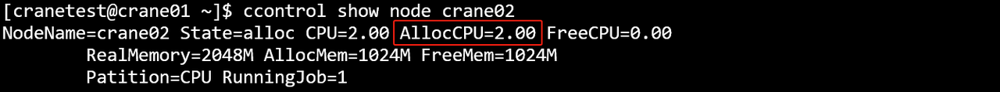
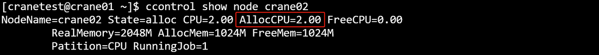

cbatch 提交批处理作业
cbatch主要是将用户描述整个计算过程的脚本传递给作业调度系统，并为作业分配作业号，等待作业调度系统为其分配资源并执行。
CraneSched系统中必须有用户和账号才能提交作业，添加用户和账户请参考cacctmgr教程。
首先介绍一个简单的单节点作业的例子:
下列作业将申请一个节点，一个CPU核心，并在计算节点上运行hostname并退出
#!/bin/bash
#CBATCH --ntasks-per-node 1
#CBATCH --nodes 1
#CBATCH -c 1
#CBATCH --mem 20M
#CBATCH --time 0:3:1
#CBATCH -o job.out
#CBATCH -p CPU
#CBATCH -J Test_Job
hostname
假设上面作业脚本的文件名为cbatch_test.sh，通过cbatch命令提交：
cbatch运行结果展示


主要参数：
- -h/--help: 显示帮助
- -A/--account string：提交作业的账户
- -D/--chdir string：任务工作路径
- -C/--config string：配置文件路径(默认 "/etc/crane/config.yaml")
- -c/--cpus-per-task float: 每个节点申请的CPU核心数
- -e/--error string：指定脚本错误日志定向路径
- -x/--exclude string ：功能是从分配中排除特定节点（用逗号分隔的列表 ），用于节点分配管控场景，指定不想参与分配的节点。
- --export string ：作用为传播环境变量，在涉及环境变量传递，让变量在相关任务、作业等执行环境中生效时使用。
- --extra-attr string ：可设置作业的额外属性（json格式 ），用于给作业附加自定义的属性信息，方便识别、管理等。
- --get-user-env ：会加载用户的登录环境变量，让作业等执行时能使用用户登录时的环境变量配置。
- --gres string ：指定每个任务所需的通用资源，格式如 gpu:a100:1（指定使用 1 块 a100 型号 GPU ）或 gpu:1（指定使用 1 块 GPU ，不限具体型号 ），用于 GPU 等资源分配场景。
- -J/--job-name string：作业名
- --json：以 JSON 格式输出
- --mail-type string：当特定事件发生时，向用户发送邮件通知，支持的值有：无（NONE）、开始（BEGIN）、结束（END）、失败（FAIL）、达到时间限制（TIMELIMIT）、所有事件（ALL）（默认是无（NONE) ）
- --mail-user string：通知接收者的邮件地址
- --mem string：最大实际内存量，支持 GB（G，g）、MB（M，m）、KB（K，k）和字节（B）为单位，默认单位是 MB
- -w/--nodelist string ：要分配给作业的节点（逗号分隔的列表 ）
- -N/--nodes uint32 ：作业要运行的节点数量（格式 N = min[-max] ，默认 1 ）
- --ntasks-per-node uint32 ：每个节点要调用的任务数量（默认 1 ）
- --open-mode string ：设置打开输出和错误文件的模式，支持的值：append（追加 ）、truncate（截断 ，默认 ）
- -o/ --output string ：脚本标准输出的重定向路径
- -p/ --partition string ：请求的分区
- -q/--qos string ：作业使用的服务质量（QoS ）
- --repeat uint32 ：多次提交作业（默认 1 ）
- -r/--reservation string ：使用预留资源
- -t /--time string ：时间限制 ，格式："day-hours:minutes:seconds"（如 5-0:0:1 表示 5 天 1 秒 ）或 "hours:minutes:seconds"（如 10:1:2 表示 10 小时 1 分钟 2 秒 ）
- -v /--version ：cbatch 的版本
- --wrap string ：将命令字符串包装到 sh 脚本中并提交
例：


 



常用环境变量
| 变量名 | 说明 |
|---|---|
| CRANE_JOB_NODELIST | 作业分配的节点列表 |
| %j | 作业号 |
下面介绍提交一个跨节点多核心的例子：
c下列作业将在三个节点上运行，每个节点使用4个CPU核心。
#!/bin/bash
#CBATCH -o crane_test%j.out
#CBATCH -p CPU
#CBATCH -J "crane_test"
#CBATCH --nodes 3
#CBATCH --ntasks-per-node 4
#CBATCH -c 4
#CBATCH --time 50:00:00
# 生成作业分配的节点的machinefile
echo "$CRANE_JOB_NODELIST" | tr ";" "\n" > crane.hosts
#加载MPI运行环境
module load mpich/4.0
#执行跨节点并行任务
mpirun -n 13 -machinefile crane.hosts helloWorld > log